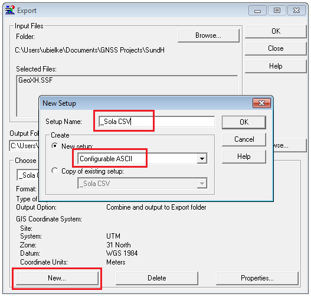
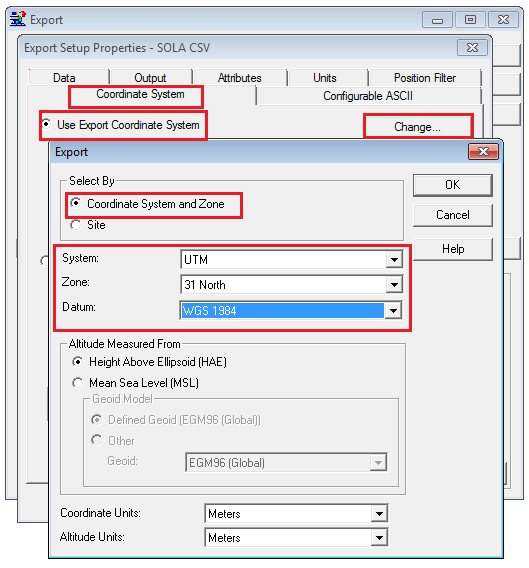
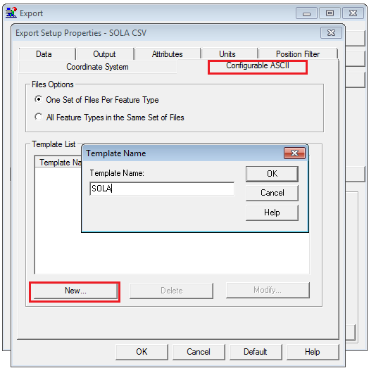
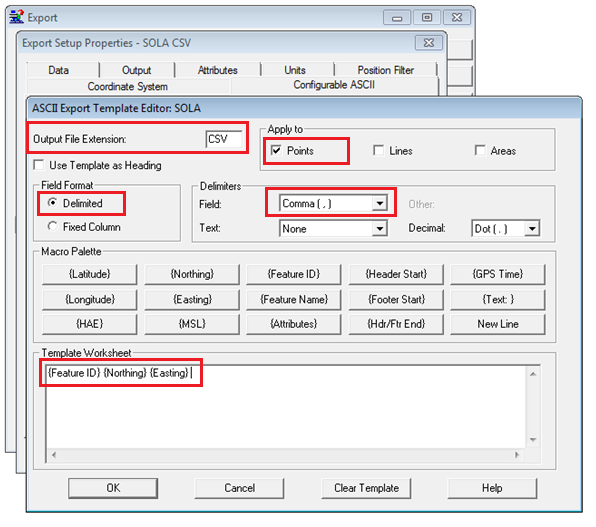
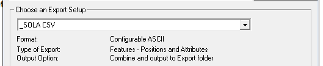

Appendix 2 - Trimble Pathfinder Software Configuration for SOLA Export CSV File
SOLA CSV Format definition:
-
-
First column: Is a unique identifier of the point within the file. It can start with 1
and incrementing by one.
-
Second column: X coordinate.(Easting)
-
Third column: Y coordinate. (Northing)
The values are separated by commas
Example:
|
Id,X,Y
|
|
|
|
1,570559.75,5931649.69
|
In this example the coordinate system will be UTM, Zone 31N and the datum
is WGS84. FOR SAMOA – Ensure the Samoa Map Grid coordinate system is configured at step
7
Steps
-
-
Start Pathfinder Office and create/select a project.
-
Select Utilities > Export and New:

New Export Setup
-
-
In the New Setup Window enter a Setup name (for example: _Sola CSV ).
Note: The underscore will bring the SOLA format to the top of the list later on.
-
Select New Setup and scroll for Configurable ASCII and tap OK.

Coordinate System Setup
-
-
The Export Setup Properties Window will open. Select the Coordinate System Tap.
-
Select Use Export Coordinate System and tap Change… The Export Window
will open.
-
Select System: UTM
-
Zone: Select the Zone for Samoa Map Grid (SMG)
-
Datum: Select the Datum for Samoa Map Grid (SMG)
-
Click OK. The Export Setup Properties Window will open again.

Export Template Name
-
-
Select the Configurable ASCII Tab and New…
-
Enter a name for your new format (Example SOLA) and click OK. The ASCII
Export Template Editor page will open

Export Template Editor
-
-
Enter the Output File Extension : CSV
-
Apply to : Points only
-
Select the Field Format : Delimited
-
Select the Delimiters Field : Comma (,)
-
Select the following output definitions from the Macro Palette with left mouse click:
-
{Feature ID}
-
{Easting}
-
{Northing}
Note: Easting refers to the eastward-measured distance (or the x-coordinate) and Northing
refers to the northward-measured distance (or the y-coordinate).
-
-
To use the define Export system select Select Utilities > Export,
select your data file and Choose an Export Setup:

Choose Export Setup
Also See